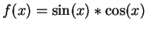
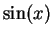
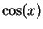
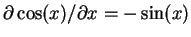
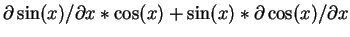
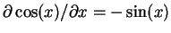
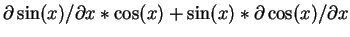

For the case where is a function of a single measurable  , the
right hand side of Eq. 1 can be evaluated as follows. Each
leaf of the parsing tree will either be (1) a constant, (2) a
variable, or (3) another sub-tree representing a sub-expression. The
derivatives can be computed by the repeated application of the
derivative chain rule. Starting from the bottom of the tree, a value
of
, the
right hand side of Eq. 1 can be evaluated as follows. Each
leaf of the parsing tree will either be (1) a constant, (2) a
variable, or (3) another sub-tree representing a sub-expression. The
derivatives can be computed by the repeated application of the
derivative chain rule. Starting from the bottom of the tree, a value
of  is pushed on the Derivative Stack (DS) (equivalent of putting
is pushed on the Derivative Stack (DS) (equivalent of putting
 on the stack) for every leaf of the tree
(which, at the bottom, correspond to the symbols from the symbol
table or constants). The nodes of a tree corresponds to one of the
arithmetic operators ('+', '-', '/', '*',
'^', and '**') or built-in functions, which are
implemented as function calls. These functions push the result of the
operations on the VMS while the corresponding partial derivatives
are pushed on the DS.
on the stack) for every leaf of the tree
(which, at the bottom, correspond to the symbols from the symbol
table or constants). The nodes of a tree corresponds to one of the
arithmetic operators ('+', '-', '/', '*',
'^', and '**') or built-in functions, which are
implemented as function calls. These functions push the result of the
operations on the VMS while the corresponding partial derivatives
are pushed on the DS.
The final result and the error propagation will in general use the
values from both the stacks (the VMS and the DS). E.g. for
, when the execution reaches the node for the
'' operator, the VMS will have two values, namely  and
. The DS also has two values, namely the two derivatives
 and
. The value of is pushed on the VMS,
and its derivate (
), computed using both the stacks, pushed
on the DS. The '=' operator rule finally takes the value from
the DS, and compute the right hand side of Eq. 1.
and
. The value of is pushed on the VMS,
and its derivate (
), computed using both the stacks, pushed
on the DS. The '=' operator rule finally takes the value from
the DS, and compute the right hand side of Eq. 1.
An arbitrary expression composed of user defined variables or built-in functions, will itself be represented as a sub-tree. Hence, applying the above algorithm recursively, case (3) above (a sub-expression) will also be correctly handled.